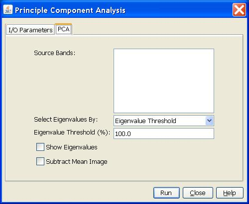

| Principal Component Analysis | |
This operator generates the principal component images from a stack of co-registered detected images. The Principal Component Analysis (PCA) consists of a remapping of the information of the input co-registered images into a new set of images. The output images are scaled to prevent negative pixel values.
The PCA operator consists of the following major steps:
Average the pixels across the input images to compute a mean image. Optionally subtract the computed mean image from each input image.
Subtract the mean value of each input image (or image from step 1) from itself to produce zero-mean images.
Compute covariance matrix from the zero-mean images given in step 2.
Perform eigenvalue decomposition of the covariance matrix.
Compute PCA images by multiplying the eigenvector matrix by the zero-mean images given in step2. Here the user can select the eigenvectors instead of using all vectors. The selection is done with a user input threshold, which is in percentage, on the eigenvalues. For example, in the case of three input images, a1, a2 and a3 (where a1 >> a2 >> a3) are the eigenvalues, if the threshold is 80% and (a1+a2) >> 80%, then a3 will not used in computing the PCA images. Only two PCA images will be produced.
The following parameters are used by the operator:
Source Bands: All bands (real or virtual) of the source
product. You may select one or more bands for performing PCA. If no
bands are selected, then by default all bands will be selected.
Eigenvalue Threshold: The threshold used in the eigenvalue selection for producing the final PCA images.
Show eigenvalues: Checkbox indicating that eigenvalues are displayed automatically.
Subtract Mean Image: Checkbox indicating that the mean image of user selected input images will be subtracted from each input image before Principal Component Analysis is applied.

GPT operator: Principal-Components. Generated from the operator source; parameter names are those used in GPT and graph XML.
| Parameter | Type | Default | Allowed values | Unit | Description |
|---|---|---|---|---|---|
sourceBands | String[] | The list of source bands. | |||
selectEigenvaluesBy | String | Eigenvalue Threshold | Eigenvalue Threshold, Number of Eigenvalues | Select Eigenvalues By: | |
eigenvalueThreshold | double | 100 | (0, 100] | The threshold for selecting eigenvalues | |
numPCA | int | 1 | (0, 100] | The number of PCA images output | |
showEigenvalues | Boolean | 1 | Show the eigenvalues | ||
subtractMeanImage | Boolean | 1 | Subtract mean image |